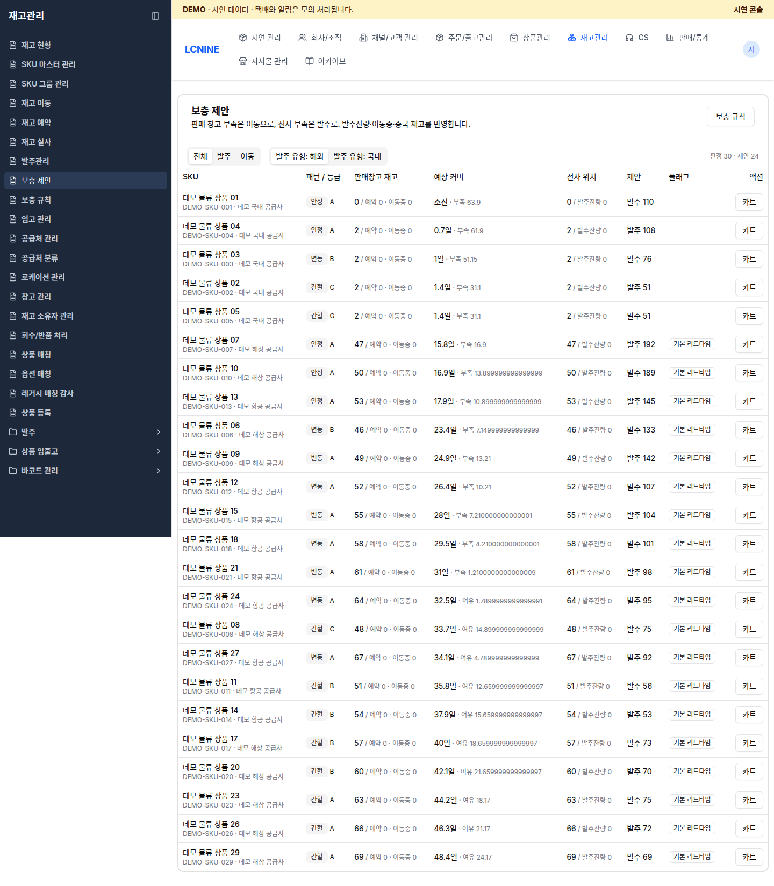
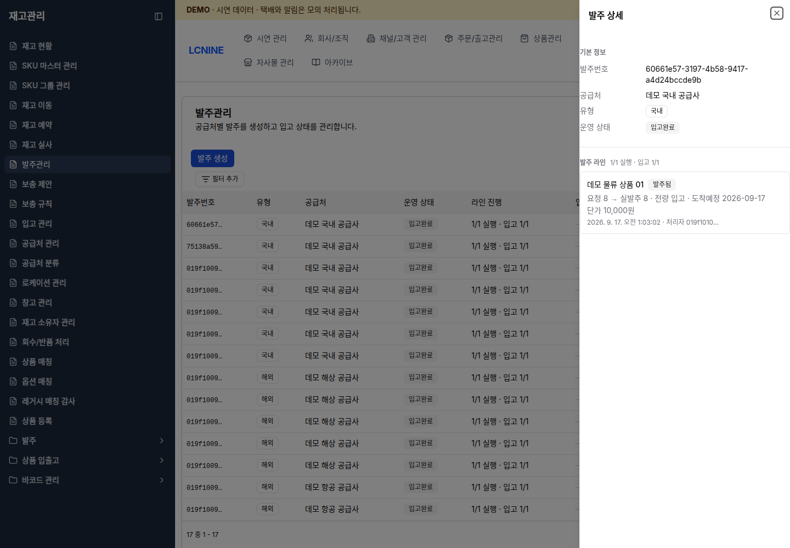

ROLE GUIDE · RETAIL
발주서는 만들고 끝이 아닙니다
보충 제안을 읽고, 품목별 실제 발주를 기록하고, 물류팀의 부분 입고가 잔량 0이 될 때까지 확인합니다.
BEFORE YOU START
세 가지를 먼저 고정합니다
계정·상품·창고가 흐름 중간에 바뀌면 수량 대사가 무너집니다.
1
demo 확인
- 상단 DEMO · 시연 데이터
- 리테일 권한 계정
- 시연 콘솔 준비 완료는 안내자가 확인
2
교육 상품
- 상품명과 SKU 코드
- 고정 실습은 안내자가 지정
- 다른 작업 진행 여부 확인
3
인계 기준
- 목적지 창고
- 입고 예정일
- 물류 담당자와 인계 시각
SKU 코드와 SKU ID는 다릅니다. 수동 발주 생성 화면은 SKU ID를 받습니다. 교육에서는 보충 제안 → 카트 흐름을 우선 사용해 잘못된 ID 입력을 피합니다.
STEP 1 · READ THE SIGNAL
보충 제안에서 “왜 사는지” 확인합니다
재고관리›보충 제안›전체 또는 발주›발주 유형: 국내
| 화면 열 | 확인할 의미 |
|---|---|
| SKU | 상품명 · SKU 코드 · 공급처가 실습 대상과 같은가 |
| 판매창고 재고 | 현재 수량 / 예약 / 이동중. 가용과 혼동하지 않기 |
| 예상 커버 | 재고가 며칠 버티는지와 부족 수량 |
| 전사 위치 | 전사 수량 / 이미 발주한 잔량 |
| 제안 | 발주 또는 이동, 추천 수량 |
샘플 판단 · DEMO-SKU-001의 현재 수량과 예약을 기록하고, 합동 실습 수량 10개는 추천량과 별도로 교육 작업지에 고정합니다.

STEP 2 · CREATE THE PO
카트에서 발주서를 만듭니다
- 발주 유형: 국내를 선택하고 대상 행의 카트를 클릭합니다.
- 재고관리›발주관리에서 발주 카트를 엽니다.
- 상품·공급처를 확인하고 수량을 10으로 바꿉니다.
- 발주 생성 → 공급처, 목적지 창고, 입고 예정일을 입력합니다.
- 마지막 발주 생성을 누르고 “발주가 생성되었습니다.”를 확인합니다.
고정 실습 입력 예
- 상품
- 안내자가 지정한 SKU 1종
- 요청 수량
- 10
- 공급처
- 데모 국내 공급사
- 목적지
- 데모 국내 물류센터
- 입고 예정일
- 안내자가 지정한 날짜
정상 결과는 발주 목록에 새 행이 생기는 것입니다. 이 시점에는 아직 공급처에 “실제로 발주했다”는 기록이 없습니다. 이어서 품목별 실행을 해야 합니다.
STEP 3 · EXECUTE EACH LINE
실행은 되돌릴 수 없는 실제 발주 기록입니다
- 발주관리에서 새 행의 상세를 누릅니다.
- 상태 요청됨, 요청 수량 10을 확인합니다.
- 해당 품목의 실행을 누릅니다.
- 실발주 수량 10, 실제 단가, 도착 예정일을 입력합니다.
- 실행 기록 후 상태가 발주됨, “요청 10 → 실발주 10”인지 확인합니다.
수량·SKU·공급처가 틀리면 실행 기록을 누르지 말고 창을 닫습니다. 실행 기록은 되돌릴 수 없습니다.
발주 실행 기록 — 교육 상품
10개
10
10,000
안내자 지정일
닫기 실행 기록
STEP 4 · FOLLOW PARTIAL RECEIPTS
부분 입고는 “진행 중”입니다
실행 직후요청 10 → 실발주 10
입고 0 / 남음 10
입고 0 / 남음 10
1차 입고물류팀 4개 입고·적치
받음 4 / 남음 6
받음 4 / 남음 6
2차 입고물류팀 6개 입고·적치
받음 10 / 남음 0
받음 10 / 남음 0
완료 확인발주 운영 상태 입고완료
미적치 0 별도 대사
미적치 0 별도 대사
리테일이 보는 것
- 발주 상세의 요청·실발주·입고 누계
- 품목별 도착예정일
- 남은 수량이 6 → 0으로 바뀌는지
물류가 확인할 것
- 입고 4개와 6개가 각각 기록됨
- DEMO-RECEIVING의 대기 수량
- DEMO-A-01-01 적치 후 대기 0
입고 확정 ≠ 적치 완료. 발주 화면이 전량 입고여도 입고대기 위치에 재고가 남을 수 있습니다. 물류팀의 “적치 완료·대기 0” 인계를 받아야 실습 완료입니다.
VERIFIED SCREEN
완료 발주 상세는 이렇게 읽습니다

정상 완료 예
운영 상태 입고완료
발주 라인 1/1 실행 · 입고 1/1
품목 발주됨
수량 요청 8 → 실발주 8 · 전량 입고
완료 발주에는 실행, 예정일 수정, 잔량 포기가 나타나지 않을 수 있습니다. 상태에 따라 허용된 버튼만 표시됩니다.
이 캡처는 별도 완료 건입니다. Acceptance에서 SKU 58005, PO 6f59ecb3…28ec8의 10개를 4+6으로 받고 남음 0, 미적치 0을 확인했습니다.
CONTROLLED ENDINGS
예외 버튼은 조건과 결과가 다릅니다
| 화면 버튼 | 언제 사용 | 필수 입력 / 결과 | 사용하지 말아야 할 때 |
|---|---|---|---|
| 예정일 수정 | 실행한 품목의 도착일 변경 | 날짜 저장 또는 비우기 | 수량 자체를 바꾸려는 경우 |
| 불가 | 요청 품목을 끝내 발주 못함 | 사유 선택 입력, 불가로 종결 | 이미 실행한 품목 또는 일시 지연 |
| 잔량 포기 | 부분 입고 뒤 남은 수량을 더 받지 않음 | 사유 필수, 남은 수량 종결 | 남은 6개가 곧 도착하는 경우 |
| 발주 취소 | 입고 전 발주 전체를 취소 | 사유 필수, 되돌릴 수 없음 | 이미 입고된 라인이 하나라도 있는 경우 |
모두 종결성 조작입니다. 교육 예외용 별도 발주에서만 연습하고, 기본 10개 발주에는 안내자 지시 없이 사용하지 않습니다.
부분 입고 후 공급 중단이라면 발주 전체 취소가 아니라 해당 품목의 잔량 포기가 맞습니다.
HANDOFF
물류팀에 이 카드 한 장을 넘깁니다
발주번호생성 후 전체 값
목적지 창고데모 국내 물류센터
상품명 / SKU교육 상품 / 코드
실발주 수량10
1차 수령4
2차 수령6
도착 예정일YYYY-MM-DD
리테일 담당자이름 · 시각
리테일 완료 기준
- 상태가 발주됨으로 바뀜
- 요청 10 → 실발주 10 표시
- 물류팀이 발주번호로 입고 예정 건을 찾음
- 4개 입고 뒤 남음 6 확인
- 6개 추가 입고 뒤 남음 0 확인
- 물류팀이 미적치 0을 인계
동시 실습에서는 “현재 재고 +10”만으로 성공을 판정하지 않습니다. 발주·입고 원장과 작업 ID를 기준으로 확인합니다.
TROUBLESHOOTING
막히면 상태를 바꾸기 전에 원인을 확인합니다
| 증상 | 확인 | 다음 행동 |
|---|---|---|
| 보충 제안에 상품이 없음 | 필터 전체/발주/이동, 공급처·보충 규칙, 안내자의 데이터 준비 | 수동 SKU ID를 추측하지 말고 안내자에게 SKU ID 요청 |
| 실행이 없음 | 품목 상태가 요청됨인지, 발주 전체가 취소/입고완료인지 | 이미 종결된 건이면 새 발주번호로 진행 |
| 4개 입고 뒤 전량 입고로 보임 | 요청/실발주 수량이 정말 10인지, 잘못 4로 실행했는지 | 발주번호와 실발주 수량을 안내자에게 전달 |
| 발주 취소가 없음 | 이미 일부라도 입고됐는지 | 남은 입고를 중단하려면 잔량 포기 검토 |
| 목록 숫자가 바로 안 바뀜 | 상세를 닫았다 다시 열어 최신 데이터 확인 | 중복 생성/실행하지 말고 오류 문구와 시각 기록 |
에스컬레이션 · demo 표시, 발주번호, SKU, 요청/실발주/입고/남은 수량, 마지막 버튼, 오류 문구를 함께 전달합니다.